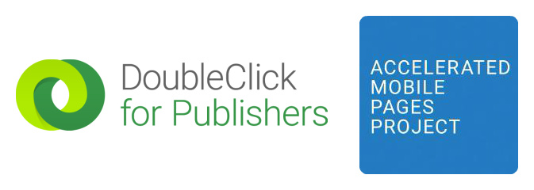

ABOUT
×
About
This is an AMP Ads Test cases project built by members of the DoubleClick team to help publishers in their AMP Ads testing.
Built by:
Craig Saunders
Vamsee Jasti
Nitin Kashyap
AMP Ads test cases for DFP
DFP Ad Formats
Static Image ad (Banner) DFP reservation
DFP Native for Web Ad
HTML5 ad
DFP working with other ad servers
Static Image ad (Banner) DFP backfill to AdX
Static Image ad (Banner) ADSense direct
Static Image ad (Banner) A9 direct (or any other adserver)
Static Image ad (Banner) DFP to 3P Network e.g., Rubicon, YieldMO etc.
Ad delivered using 3rd party javascript from a remote server (beta)
DFP features
Frequency capping in DFP
Geotargeting in DFP
Ad with extra K-V JSON targeting
Ad with Google Audience Targeting